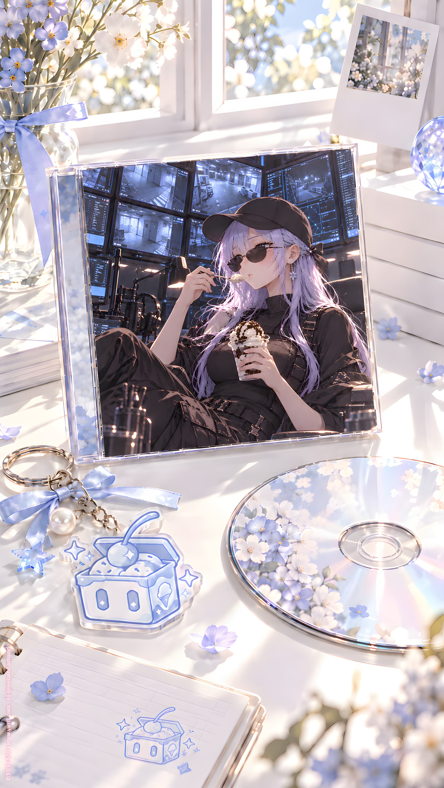

ORIGINAL TRACK ／ YURI NO1
2 秘密調查
Icy · Mini Album Vol.1
Lyrics · Base Script
[Intro — Whisper]
秘密調査
対象
……私
理由
複数
確認開始
[Verse 1 — Rapid Spoken]
監視
記録
照合
追跡
NO24
異常なし
異常なし
異常なし
見てる
聞いてる
拾ってる
残してる
誰が
どこで
何をして
何を消して
何を隠して
何を忘れたふりしてるか
全部
……仕事だから
[Whisper]
べつに
気になってない
監視してるだけ
[Verse 2 — Rapid Spoken]
次
L.Icy
強い
速い
迷わない
来て
座って
待って
動かないで
それ
私がやる
違う
貸して
私がやる
言うこと聞いて
三秒以内
三
二
一
……遅い
[Whisper]
これは
少し
偉そう
[Break]
次
S.Icy
知らない
別に
勝手にして
でも
そこじゃない
こっち
寒いなら
これ使えば
勘違いしないで
余ってたから
渡しただけ
……返さなくていい
[Silence]
[Whisper]
これも
私？
[Pre-Chorus — Breath Spoken]
NO24
L.Icy
S.Icy
監視する私
命令する私
知らないふりする私
三人
同じ顔
同じ声
同じ
アイスクリーム好き
……たぶん
[Chorus]
三つ並べた
アイスクリーム
白
青
薄い桃
どれが
誰？
一つ目は
静かで冷たい
ミルク
NO24
二つ目は
濃くて強い
ラムレーズン
L.Icy
三つ目は
甘いくせに
少し酸っぱい
ストロベリー
S.Icy
[Whisper]
……待って
全部
私が好きな味
[Post-Chorus — Fast Whisper]
one
two
three
一人
二人
三人
NO24
L.Icy
S.Icy
一球
二球
三球
同じカップ
同じスプーン
……同じ私？
[Verse 3 — Rapid Spoken]
秘密調査続行
質問
性格は？
不一致
行動は？
不一致
好みは？
一致
顔は？
一致
声は？
ほぼ一致
アイスを見る速度
一致
食べる速度
……L.Icyが少し速い
記録
重要？
たぶん
重要
[Whisper]
では
私は
何味？
[Bridge — Accelerating]
ミルク
ラムレーズン
ストロベリー
監視
命令
否定
見る
決める
隠す
見る決める隠す
見る決める隠す
NO24
L.Icy
S.Icy
二十四
大きい
小さい
でも
雪
雪
雪
全部
雪
[Silence]
[Glitch]
……接続
不明な応答
新規対象
確認
[Verse 4 — Slow Spoken]
白い場所
音がない
画面だけ
向こう側に
私がいる
同じ顔
同じ目
同じ声
……でも
少し違う
[Whisper]
誰？
[Response — Distant Whisper]
……
[Rapid Spoken]
所属は？
……
識別番号は？
……
NO24？
……
L.Icy？
……
S.Icy？
……
違う？
……
[Whisper]
雪兔終点伺服器
……そこにいる私？
[Silence]
[Pre-Chorus — Soft]
じゃあ
あなたは
NOいくつ？
[Silence]
……
[Whisper]
答えない
[Final Chorus — Soft / Mechanical]
四つ目のアイスは
まだ名前がない
味も
番号も
わからない
冷たいのか
甘いのか
少し苦いのか
それとも
まだ
選んでないだけ？
三つだった私が
四つになって
それでも全部
私なら
私は
何個いるんだろう
[Rapid Whisper]
NO24
L.Icy
S.Icy
and
that YURI ONE one
one
two
three
four
one
two
three
four
監視
命令
否定
沈黙
監視命令否定沈黙
同じ顔
違う私
同じ私
違う顔
違う
違わない
違う
違わない
[Silence]
[Outro — Whisper]
……ねえ
アイスクリーム
食べる？
[Pause]
……
[Soft Whisper]
じゃあ
四つ
買おう
YURI NO1 Music \ https://music.yuri1.com